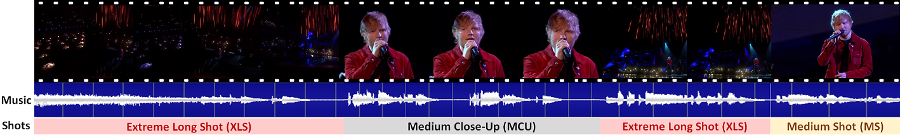
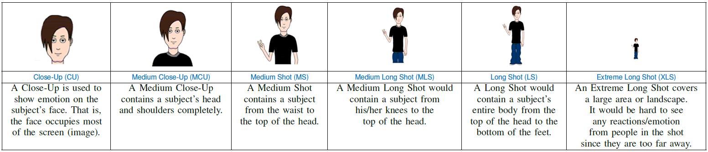
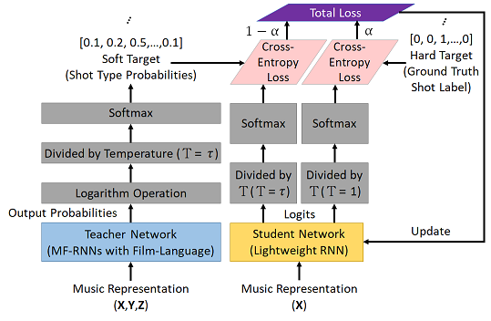
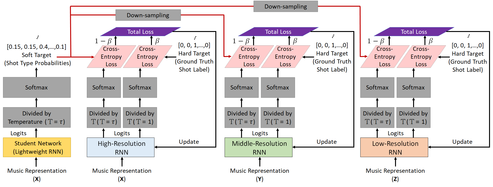

Learning From Music to Visual Storytelling of Shots: A Deep Interactive Learning Mechanism
Jen-Chun Lin1, Wen-Li Wei1, Yen-Yu Lin2, Tyng-Luh Liu1, and Hong-Yuan Mark Liao1,3
1Institute of Information Science, Academia Sinica, Taiwan
2Department of Computer Science, National Chiao Tung University, Taiwan
3Department of Computer Science and Information Engineering, Providence University, Taiwan
ACM Multimedia 2020
Abstract
Learning from music to visual storytelling of shots is an interesting and emerging task. It produces a coherent visual story in the form of a shot type sequence, which not only expands the storytelling potential for a song but also facilitates automatic concert video mashup process and storyboard generation. In this study, we present a deep interactive learning (DIL) mechanism for building a compact yet accurate sequence-to-sequence model to accomplish the task. Different from the one-way transfer between a pre-trained teacher network (or ensemble network) and a student network in knowledge distillation (KD), the proposed method enables collaborative learning between an ensemble teacher network and a student network. Namely, the student network also teaches. Specifically, our method first learns a teacher network that is composed of several assistant networks to generate a shot type sequence and produce the soft target (shot types) distribution accordingly through KD. It then constructs the student network that learns from both the ground truth label (hard target) and the soft target distribution to alleviate the difficulty of optimization and improve generalization capability. As the student network gradually advances, it turns to feed back knowledge to the assistant networks, thereby improving the teacher network in each iteration. Owing to such interactive designs, the DIL mechanism bridges the gap between the teacher and student networks and produces more superior capability for both networks. Objective and subjective experimental results demonstrate that both the teacher and student networks can generate more attractive shot sequences from music, thereby enhancing the viewing and listening experience.
Music to visual storytelling of shots
An example of visual storytelling for the song “Supermarket Flowers” by Ed Sheeran live at the BRIT Awards 2018.
The director sequentially uses the XLS, MCU, XLS, and MS to expand the storytelling potential in the beginning of the song.

Types of Shots
In the language of film, shot (type) is a fundamental element of visual storytelling [1, 2]. The type of shot is defined as how much a target subject and its surrounding area can be seen. Totally, six types of shots are defined, as described in the following Table.

Besides the six types of shots, the audience shot (ADS) and musical instrument shot (MIS) also considered to enrich the visual storytelling in a concert video.
Proposed Deep Interactive Learning Mechanism
In this study, we present a deep interactive learning (DIL) mechanism for building a compact yet accurate sequence-to-sequence model to achieve the music to visual storytelling of shots translation.
Different from the one-way transfer between a pre-trained teacher network (or ensemble network) and a student network in knowledge distillation (KD) [3], the proposed DIL mechanism enables collaborative learning between an ensemble teacher network and a student network. Namely, the student network also teaches.
In the proposed DIL mechanism, learning comes from two aspects: teacher-to-student and student-to-teacher.
Regarding teacher-to-student learning, the process starts with a powerful pre-trained teacher network, MF-RNNs with film-language [4], and then performs knowledge transfer to a student network (lightweight RNN) through KD.

In student-to-teacher learning, we turn to distill the knowledge (soft target distribution) from the student network and then transfer the knowledge to each of assistant networks (temporal resolution RNNs) integrated in the teacher network, thereby upgrading the teacher network.

Thus, repeating such a DIL mechanism gradually improves the performance of both student and teacher networks.
After training, the student network is finally used to achieve the music to visual storytelling of shots translation.
MOS
Subjective evaluation in terms of 5-point mean opinion score (MOS) is conducted on three concert video sets. For a concert video set, each concert video is generated from multiple audience recordings that under the guidance of official shot type sequence and the shot type sequences translated from lightweight RNN-DIL, MF-RNNs-DIL, lightweight RNN-KD [1], and MF-RNNs (with film-language) [2], respectively.
Three indicators are considered for evaluation: (1) Does the frequency of shot switching match the music? (2) Does the timing of cut point match the music? (3) Overall, does the visual storytelling of shots match the music?
For each figure, the vertical and horizontal axes represent the number of people and MOS score (from bad to excellent), respectively.
[1] D. Andrews. Communications & Multimedia Technology. Digital Overdrive, 2011.
[2] G. Mercado. The Filmmaker's Eye: Learning (and Breaking) the Rules of Cinematic Composition. Taylor & Francis, 2010.
[3] G. E. Hinton, O. Vinyals, and J. Dean, Distilling the knowledge in a neural network, In NeurIPS Workshop, 2015.
[4] W.-L. Wei, J.-C. Lin, T.-L. Liu, Y.-H. Yang, H.-M. Wang, H.-R. Tyan, and H.-Y. Liao, Seethevoice: Learning from music to visual storytelling of shots, ICME, 2018.
BibTeX
@inproceedings{LinMM20,
author = {Lin, Jen-Chun and Wei, Wen-Li and Lin, Yen-Yu and Liu, Tyng-Luh and Liao, Hong-Yuan Mark},
title = {Learning From Music to Visual Storytelling of Shots: A Deep Interactive Learning Mechanism},
year = {2020},
booktitle = {Proceedings of the 28th ACM International Conference on Multimedia},
pages = {102–110},
}